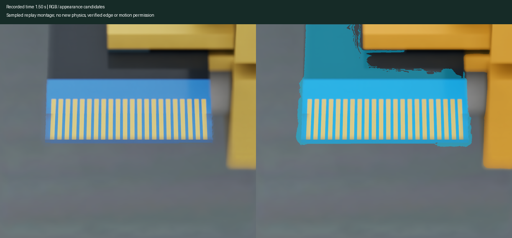

The proposed macro camera has now rendered seven views of the recorded lift in Isaac. The contacts are visible; focus and framing still need work. Leading-edge estimation and slip detection remain unverified.

Every raw frame, diagnostic masks, video, synthetic calibration and native replay are available together. This is recorded-state rendering, not a new physics run or a passed insertion milestone.
Earlier colour-baseline failure · Methods and remaining checks